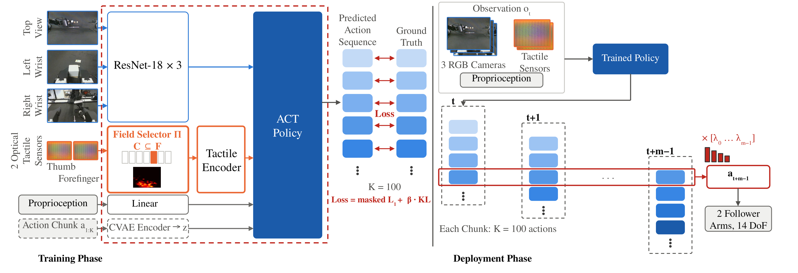
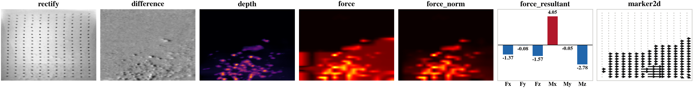
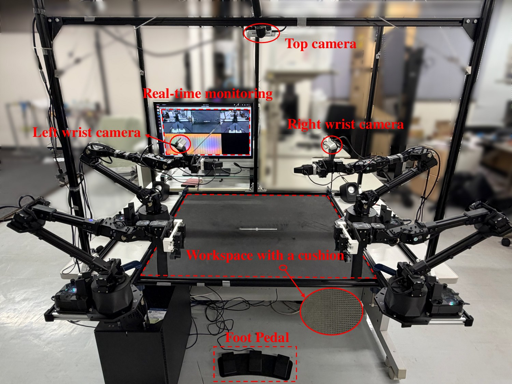
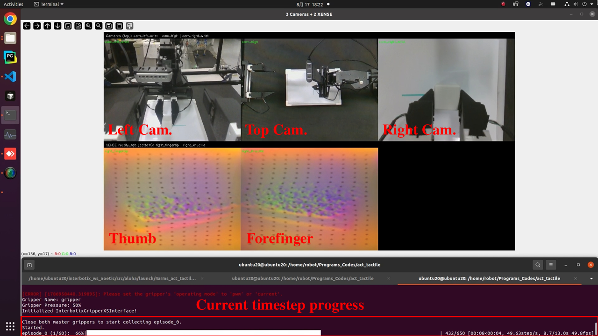
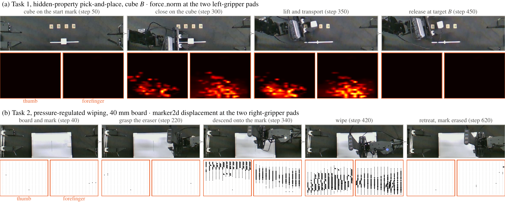
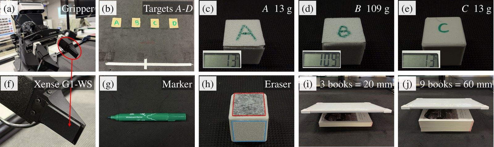
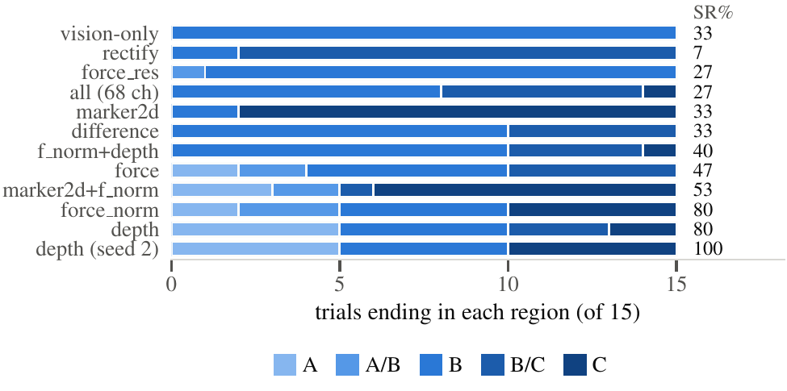

Neuro-Robotics Laboratory, Department of Robotics,
Graduate School of Engineering, Tohoku University, Sendai, Japan
*Corresponding author
Tactile sensing is vital for contact-rich robotic manipulation, yet how different tactile representations affect visuo-tactile imitation learning remains insufficiently understood. We present a controlled study of how tactile field selection governs policy performance. On a four-arm ALOHA platform with optical tactile sensors we co-record all seven native fields — surface image, baseline difference, indentation depth, three-axis force, normal force, six-dimensional wrench and marker displacement — in one dataset, and extend Action Chunking with Transformers (ACT) with a tactile encoder fusing the selected tokens with visual and proprioceptive features under a standardised protocol.
Eleven configurations are evaluated on two real-robot tasks, hidden-property pick-and-place and pressure-regulated wiping. Field selection dominates, spanning 6.7–100.0% and 6.7–86.7% success against 33.3% and 13.3% for the vision-only baselines, and the effective field is task-dependent: indentation depth reaches 80.0% and 100.0% over two seeds on pick-and-place, while tangential marker displacement reaches 86.7% and 80.0% on wiping yet sits at the collapse floor on the other task. Combining fields is not additive: of four physically motivated pairs, three fall below their better constituent (27/60 versus 45/60 pooled, p = 0.001), the same pair helping on one task and collapsing on the other, and concatenating all seven fields degrades success to 26.7% and 40.0%. Selecting task-matched tactile representations is therefore far more effective than maximising tactile input dimensionality.
Successful closed-loop rollouts of the winning policy on each task. In both videos the panel at the top right is the live, frame-synchronised tactile field that the policy actually consumes.
Three consecutive evaluation episodes — cube A, cube B and
cube C. The three cubes are visually identical at 31.1 mm edge length and differ
only in hidden mass and surface friction, so the assigned target cannot be inferred from the
pre-grasp camera view. The top-right overlay shows the real-time, synchronised
force_norm field from the left-arm tactile sensors, drawn on a shared
fixed magnitude scale. Played at 2× speed.
Five consecutive evaluation episodes, one at each board height,
each announced by a title card (20, 27, 40, 47 and 60 mm; 27 and 47 mm are never
demonstrated). Because the height is set by stacking books, the descent at which contact
begins is not constant and cannot be memorised as a fixed joint trajectory. The
top-right overlay shows the real-time, synchronised marker2d displacement
field at both right-arm tactile pads. Played at 2× speed.
A single demonstration set stores every field the sensor natively returns. A fixed field selection C is then drawn at training time — the sole difference among the eleven configurations — so any difference in outcome is attributable to the representation rather than to the data, the task or the sensor.

force_norm input, 12
channels of which 8 are constant. The pad thumbnails are rectify displays, not
policy inputs. The red dashed outline encloses the model trained for C; the grey
action/CVAE path is training-only.
rectify, difference and
depth are the stored 120×160 maps, force and force_norm
per-point magnitude on that grid, force_resultant a wrench as signed bars, and
marker2d displacement from the pre-contact frame, arrows ×15. Panels are scaled
independently. Together: 17 scalar channels per sensor per frame.
All 120 demonstrations were collected by teleoperation through the leader arms. Because the properties that matter in these tasks — a cube’s hidden mass, the moment the eraser meets the board — are not visible in the camera views, the operator relies on the live tactile display as much as on the scene itself.

rectify_bgr) from the right gripper’s
thumb and forefinger pads. The terminal below tracks timestep progress during data
collection.Each clip is split-screen: a hand-held view of the cell on the left, the operator’s screen on the right. The teleoperator performs the task by visually observing the scene directly and by monitoring sensor outputs on the screen, especially the visualised tactile information; the next action is determined from this combined perception. After completing an episode the teleoperator decides whether it was successful — pressing C to continue, R to repeat the episode, or S to stop. A foot pedal drives this loop so both hands stay on the leader arms.
Both tasks are designed so that the information a vision-only policy is missing is specific and nameable. Each contributes 60 demonstrations recorded at 50 Hz.

force_norm at both pads for Task 1, one
shared scale per pad, and marker2d displacement for Task 2, arrows ×15.
Three cubes A, B and C of identical 31.1 mm edge length must each be transported to an assigned target. All three are hollow printed shells differing only in hidden properties: A and B carry the same anti-slip tape at 13 and 109 g, and C is bare PLA at 13 g — so (A, B) varies mass at fixed friction and (A, C) friction at fixed mass. All three are demonstrated identically; no cube-specific behaviour is taught. Because a policy that always releases in one region scores exactly 5/15 = 33.3% by construction, this is Task 1's collapse floor, not a level of ability.
The right follower grasps a board eraser, moves it over a mark at the whiteboard centre, presses down and wipes with its felt face. Board height is set by stacking 6.7 mm books, so the descent at which contact begins is not constant and cannot be memorised as a fixed joint trajectory. Demonstrations use 3, 6 and 9 books (20, 40, 60 mm); evaluation adds two interleaved, never-demonstrated heights, 4 and 7 books (27 and 47 mm), so Task 2 also measures interpolation to unseen geometry.
All reported results are from the physical robot: twelve policies per task, for 24 policies × 15 trials = 360 trials. Success is binary and judged from video; differences are tested with a two-sided Fisher's exact test.
| Successes | Closed loop | Decoded (%) | ||||||
|---|---|---|---|---|---|---|---|---|
| Tactile input | Ch. | A | B | C | SR (%) | κ | Cube | Cycle |
| visual-only (ACT) | — | 0/5 | 5/5 | 0/5 | 33.3 | 0.00 | — | — |
| rectify | 4 | 0/5 | 1/5 | 0/5 | 6.7 | −0.40 | 80.0 | 45.0 |
| force_res | 24 | 0/5 | 4/5 | 0/5 | 26.7 | −0.10 | 80.0 | 33.3 |
| all | 68 | 0/5 | 3/5 | 1/5 | 26.7 | −0.10 | — | — |
| marker2d | 8 | 0/5 | 1/5 | 4/5 | 33.3 | 0.00 | 73.3 | 30.0 |
| difference | 4 | 0/5 | 5/5 | 0/5 | 33.3 | 0.00 | 75.0 | 28.3 |
| force_norm + depth | 16 | 0/5 | 5/5 | 1/5 | 40.0 | 0.10 | — | — |
| force | 12 | 2/5 | 5/5 | 0/5 | 46.7 | 0.20 | 75.0 | 26.7 |
| marker2d + force_norm | 20 | 3/5 | 0/5 | 5/5 | 53.3 | 0.30 | — | — |
| force_norm | 12 | 2/5 | 5/5 | 5/5 | 80.0 | 0.70 | 71.7 | 25.0 |
| depth | 4 | 5/5 | 5/5 | 2/5 | 80.0 | 0.70 | 71.7 | 21.7 |
| depth (seed 2) | 4 | 5/5 | 5/5 | 5/5 | 100.0 | 1.00 | — | — |

depth and force_norm spread over four
regions, and depth's second seed clears all fifteen.| Board height (mm) | |||||||||
|---|---|---|---|---|---|---|---|---|---|
| Tactile input | Ch. | 20 | 27* | 40 | 47* | 60 | SR (%) | E (%) | Fail |
| visual-only (ACT) | — | 1 | 0 | 1 | 0 | 0 | 13.3 | 14.7 | 6/0/7 |
| marker2d + force_norm | 20 | 1 | 0 | 0 | 0 | 0 | 6.7 | 8.0 | 4/0/10 |
| rectify | 4 | 1 | 0 | 0 | 1 | 1 | 20.0 | 20.7 | 0/12/0 |
| force | 12 | 0 | 0 | 0 | 3 | 0 | 20.0 | 32.7 | 4/6/2 |
| difference | 4 | 0 | 0 | 0 | 1 | 3 | 26.7 | 24.7 | 0/11/0 |
| force_res | 24 | 1 | 1 | 0 | 2 | 1 | 33.3 | 44.0 | 2/3/5 |
| all | 68 | 2 | 1 | 0 | 2 | 1 | 40.0 | 48.0 | 2/1/6 |
| depth | 4 | 1 | 2 | 1 | 0 | 3 | 46.7 | 52.7 | 6/1/1 |
| force_norm | 12 | 3 | 1 | 0 | 1 | 3 | 53.3 | 64.0 | 1/2/4 |
| force_norm + depth | 16 | 3 | 3 | 1 | 3 | 2 | 80.0 | 82.7 | 0/0/3 |
| marker2d (seed 2) | 8 | 2 | 2 | 3 | 2 | 3 | 80.0 | 88.7 | 0/0/3 |
| marker2d | 8 | 2 | 3 | 3 | 2 | 3 | 86.7 | 91.3 | 1/1/0 |
Under one protocol, success spans 6.7–100.0% and 6.7–86.7% — so which representation is drawn from a single sensor matters more than whether the sensor is used at all.
force contains force_norm bit for bit at identical cost, yet
loses 33.3 points on each task. Three of four physically motivated pairs fall below
their better constituent (27/60 vs 45/60, p = 0.001), and all seven fields
concatenated reach only 26.7% and 40.0%.
The two image fields — what visuo-tactile policies most often consume — pool to 13/60 against 7/30 for vision-only (p = 1.0), while fields exposing contact geometry or force reach 57/90 (p = 5×10−7).
depth wins where the cue is mass and friction; marker2d wins
where pressure must be regulated — yet sits at the collapse floor on the other task. Neither
is the field the task's nominal physics nominates.
The cheapest static probe is anti-predictive: the two fields that decode the hidden cube best give the two worst policies (ρ = −0.91, p = 0.005). Only closed-loop evaluation found the field that worked.
Retrained with a second seed, depth goes 12/15 → 15/15 and
marker2d 13/15 → 12/15. They are not artefacts of a single initialisation —
which is what makes their disagreement worth taking seriously.